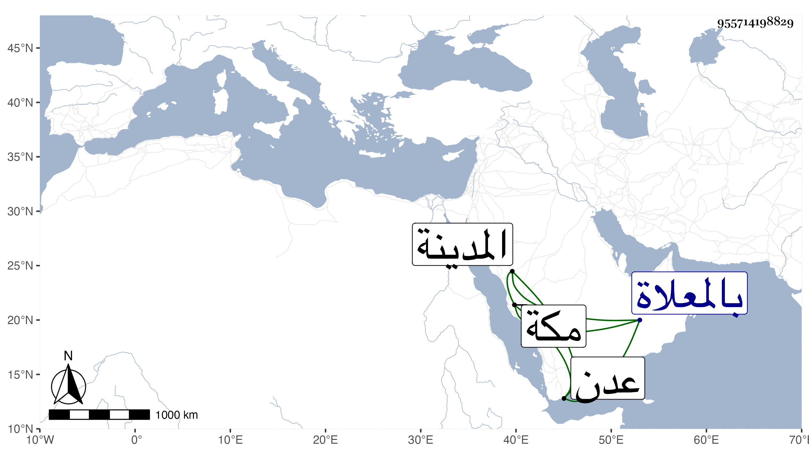

0902Sakhawi.DawLamic.ITO20230111-ara1.EIS1600.955714198829
Biography ID: 955714198829
382
أبو الفتح بن أحمد بن عبد اللطيف بن زائد أخو عبد الباسط وقريب عبد اللطيف وأبي سعد المذكورين وسبط أخت أبي سعد ويعرف كسلفه بابن زائد . ممن حفظ القرآن وغيره وعرض ودخل وعدن وزار المدينة وسمع مني بمكة ومات بينها وبين وادي مروهم عائدون به منه اليها في جمادى الثانية سنة تسعين ودفن بالمعلاة .
